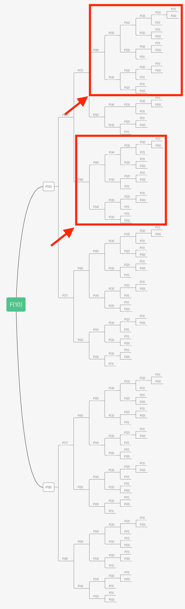
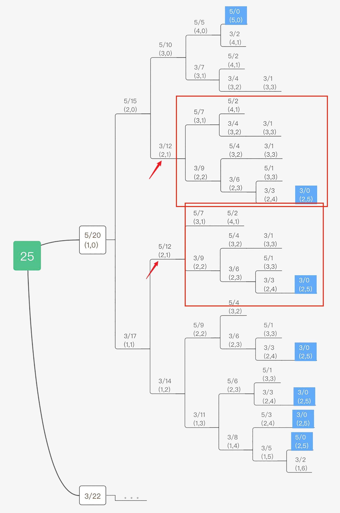
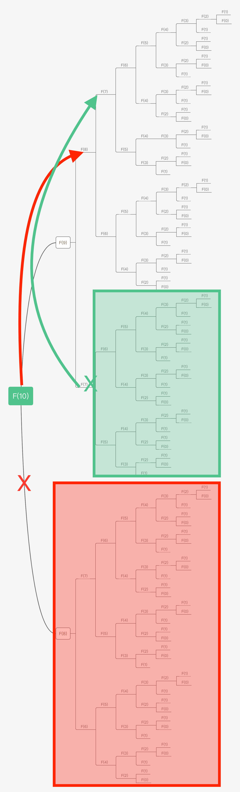

- 00 导读 动态规划问题纷繁复杂，如何系统学习和掌握它？.md.html
- 00 开篇词 为什么大厂都爱考动态规划？.md.html
- 01 硬币找零问题：从贪心算法说起.md.html
- 02 暴力递归：当贪心失效了怎么办？.md.html
- 03 备忘录：如何避免递归中的重复计算？.md.html
- 04 动态规划：完美解决硬币找零.md.html
- 05 面试即正义第一期：什么样的问题应该使用动态规划？.md.html
- 06 0-1背包：动态规划的Hello World.md.html
- 07 完全背包：深入理解背包问题.md.html
- 08 子数组问题：从解决动归问题套路到实践解题思路.md.html
- 09 子序列问题：详解重要的一大类动态规划问题.md.html
- 10 面试即正义第二期：常见的动态规划面试题串烧.md.html
- 11 动态规划新问题1：攻破最长递增子序列问题.md.html
- 12 动态规划新问题2：攻破最大子数组问题.md.html
- 13 动态规划算法设计的关键：最优子结构与状态依赖.md.html
- 14 面试即正义第三期：刷题指南，熟能生巧.md.html
- 15 课程回顾与总结（上）.md.html
- 16 课程回顾与总结（下）.md.html
- 加餐 买卖股票：常见且必考的动态规划面试题.md.html
- 结束语 在我家的后院养长颈鹿.md.html
- 捐赠
03 备忘录：如何避免递归中的重复计算？
你好，我是卢誉声。
从前面的课程中我们已经看到，动态规划问题的一般形式就是求最值。因此我先讲解了什么是最优解问题，在考虑整体最优的情况下，我们需要找到一种办法获取最优解。那么最简单直接的做法是什么呢？
其实就是把所有可行的答案穷举出来，然后在所有可行的答案中找出满足条件的最值。
这样的解法看似“天衣无缝”，但它有着重要的缺陷，而且这个缺陷是我们在面试过程中需要极力避免的：它的执行效率极低。
导致这个问题的罪魁祸首是重叠子问题，我已经不止一次提到这个概念了。那么你该如何解决重叠子问题并提高算法效率呢？
接下来我们就带着这个问题，开始学习今天的内容：备忘录。看看它能否有效解决递归过程中出现的大量重复计算的问题，提高算法效率。
什么是重叠子问题？
斐波那契数列没有求最值的问题，因此严格来说它不是最优解问题，当然也就不是动态规划问题。但它能帮助你理解什么是重叠子问题。首先，它的数学形式即递归表达是这样的：
\[F(n)=\\left\\{\\begin{array}{c}- 0,n=0\\\\\\- 1,n=1\\\\\\- F(n-1)+F(n-2),n>1- \\end{array}\\right.\]
因此写成代码也极为简洁：
int Fibonacci(int n) {
if (0 == n || 1 == n) { return n; }
if(n > 1) { return Fibonacci(n - 1) + Fibonacci(n - 2); }
return 0; // 如果输入n有误，则返回默认值
}
这个代码有问题吗？没问题，但是它效率极低。那么它效率低在哪里呢？假设上面的函数调用输入是10，我把递归树画出来：

我们要怎么理解这个递归树呢？如果要计算原问题 F(10)，你就需要先计算出子问题 F(9) 和 F(8)，如果要计算 F(9)，你就需要先计算出子问题 F(8) 和 F(7)，以此类推。这个递归的终止条件是当 F(1)=1 或 F(0)=0 时结束。
我在这里画出整个递归树的目的，在于向你尽可能详细地展示递归的过程，但凡遇到递归问题，你最好都能画出递归树，这对你分析算法的复杂度，寻找算法低效的原因都有巨大帮助。
但你也看到了，即便如此简单的递归过程，这个树也十分“巨大”。
在画求解树的时候，你可以想出求解过程是怎么进行的，但如果求解树的分支极多，那么很多人就很难继续在脑海中模拟出整个求解过程了。因此问题过于复杂，一般是无法直接画出像上面我画的那棵求解树的，即便递归在数学意义上非常直观。
因此，我给你的建议是画出主要的分支路径，帮助你理解和解决面试问题。
画完斐波那契数列的求解树之后，你发现问题没有？在我用红色标出的两个区域中，它们的递归计算过程完全相同！
这意味着，第2个红色区域的计算是“完全没有必要的”，它是重复的计算。因为我们已经在求解 F(7) 的时候把 F(6) 的所有情况计算过了。因此我们把第2个红色区域的计算称为重叠子问题。
这种问题常见吗？答案是肯定的。让我们回到硬币找零的问题上，我们把上一课的求解树再拿出来观察一下：

从上图中，我们看到了类似的模式，我同样圈选出了两个红色区域，其中第2个即5/12(2, 1)的递归子问题与第1个 3⁄12(2, 1) 的递归子问题完全相同，因此它们是重叠子问题。
对于我们实现的这个递归算法，它的复杂度是多少呢？
- 先考虑子问题的个数（即上图中节点的总数），二叉树节点总数为指数级别，因此子问题个数为指数级 O(2n)；
- 再考虑求解一个子问题的复杂度：没有计算，因此是 O(1)；
- 综上所述，该算法的时间复杂度是 O(2n)。
事实上在面试或工程实践中，指数级别的复杂度已经很难让人接受了，除非情况特殊，我们必须想办法来优化算法的时间复杂度。
该怎么做呢？到这，其实我们要解决的问题已经十分清晰明了了：只需要将重复计算的部分跳过，复用之前已经计算过的结果，以此来加速算法。
递归中的备忘录：解决重复计算的法宝
备忘录即正义
现在，我们明确了亟待解决的问题：消除重叠子问题，即消灭重复计算的过程。我们可以创建一个备忘录（memorization），在每次计算出某个子问题的答案后，将这个临时的中间结果记录到备忘录里，然后再返回。
接着，每当遇到一个子问题时，我们不是按照原有的思路开始对子问题进行递归求解，而是先去这个备忘录中查询一下。如果发现之前已经解决过这个子问题了，那么就直接把答案取出来复用，没有必要再递归下去耗时的计算了。
对于备忘录，你可以考虑使用以下两种数据结构：
- 数组（Array），通常对于简单的问题来说，使用一维数组就足够了。在后续的课程中，你会看到更为复杂的状态存储过程，届时我会指导你使用更高维度（二维甚至三维）的数组来存储状态。
- 哈希表（Hash table），如果你存储的状态不能直接通过索引找到需要的值（比如斐波那契数列问题，你就可以直接通过数组的索引确定其对应子问题的解是否存在，如果存在你就拿出来直接使用），比如你使用了更高级的数据结构而非简单的数字索引，那么你还可以考虑使用哈希表，即字典来存储中间状态，来避免重复计算的问题。
我们先来看看如何使用备忘录来解决斐波那契数列问题，直接上代码。
Java 实现：
int fibonacci(int n, int[] memo) {
if (0 == n || 1 == n) { return n; }
if (memo[n] != 0) { return memo[n]; } // 看来备忘录中找到了之前计算的结果，既然找到了，直接返回，避免重复计算
if(n > 1) {
memo[n] = fibonacci(n - 1, memo) + fibonacci(n - 2, memo);
return memo[n];
}
return 0; // 如果数值无效(比如 < 0)，则返回0
}
int fibonacciAdvance(int n) {
int[] memo = new int[n + 1];
return fibonacci(n, memo);
}
C++ 实现：
int Fibonacci(int n, std::vector<int>& memo) {
if (0 == n || 1 == n) { return n; }
if (memo[n] != 0) { return memo[n]; } // 看来备忘录中找到了之前计算的结果，既然找到了，直接返回，避免重复计算
if(n > 1) {
memo[n] = Fibonacci(n - 1, memo) + Fibonacci(n - 2, memo);
return memo[n];
}
return 0; // 如果数值无效(比如 < 0)，则返回0
}
int FibonacciAdvance(int n) {
std::vector<int> memo(n + 1, 0); // 初始化备忘录，在这里我使用数组
return Fibonacci(n, memo);
}
从以上代码可以看出，我在第12行创建了一个基于数组的备忘录，用来存储中间计算状态。第3行代码十分关键，它从我们的备忘录中查询对应索引位置存储的状态是否已经计算过（值 > 0时），如果计算过了，那么就直接返回之前计算过的答案。
我在下图中，把两个重复计算的分支画了出来，你可以清晰地看到，这些被圈出的子问题，是完全没有必要进行再次计算的，我们可以直接拿之前的计算结果来使用。

实际上，这就是我们所熟知的“剪枝与优化”，在这里我把一棵存在巨量冗余的递归树通过剪枝，改造成了一幅不存在冗余的递归图，极大减少了子问题（即递归图中节点）的个数。
通过这种方式，我们大幅缩减了算法的计算量，所有重复的部分都被跳过了。这时，我们再看看递归的复杂度是多少？
- 同样，我们先考虑子问题的个数（即上图中节点的总数）。由于本算法不存在冗余计算，子问题就是 F(1), F(2), F(3) … F(10)，因此为 O(n)；
- 再考虑求解一个子问题的复杂度：没有计算，因此是 O(1)；
- 综上所述，该算法的时间复杂度是O(n)。
使用算法解决重复计算的第一步就是需要将问题定义成函数，比如上面的硬币问题，我们可以将满足x的最小硬币总数定义成一个函数f(x)：
\[F(x)=\\left\\{\\begin{array}{c}- min(f(x-c)+1), x>0,f(x-c)\\ne-1,c\\in C\\\\\\- 0,x=0\\\\\\- \-1,x<0- \\end{array}\\right.\]
说明：在这个函数中，C 指的是硬币面值的集合。
那如果要处理这个问题，我们只需要避免每次都重复计算 F(x) 的结果就行了。如果有一次的路径中已经计算了 F(8)，那么如果在其它的路径中再次遇到 F(8) 的时候，我们就不需要再次计算这个路径了。
所以我们需要一个集合来存储所有F(x)的结果，F(x) 在计算时首先查询集合中是否存储了 F(x) 的结果，如果有则返回，没有再执行整个计算步骤。
看来，我们已经把指数级 O(2n) 时间复杂度的问题进行了“疯狂”的简化。相较于暴力递归，这就是传说中的“降维打击”。
使用备忘录求解硬币找零问题
现在，让我们再次回到硬币找零问题去实践一遍。首先这是一个可以使用动态规划解决的问题，它存在最优化问题；其次，就像我刚才所说的，该问题存在重叠子问题。
现在，让我们来看看如何使用备忘录，对硬币找零算法的复杂度进行“大刀阔斧”的简化。
我们仿照使用备忘录提高斐波那契数列算法效率的方法，对硬币找零算法进行剪枝和优化。为了简单起见，我在这里直接贴出改进后的算法实现。
Java 实现：
int getMinCountsHelper(int total, int[] values, int[] memo) {
int savedMinCount = memo[total];
if (savedMinCount != -2) { return savedMinCount; }
int valueLength = values.length;
int minCount = Integer.MAX_VALUE;
for (int i = 0; i < valueLength; i ++) { // 遍历所有面值
int currentValue = values[i];
// 如果当前面值大于硬币总额，那么跳过
if (currentValue > total) { continue; }
// 使用当前面值，得到剩余硬币总额
int rest = total - currentValue;
int restCount = getMinCountsHelper(rest, values, memo);
// 如果返回-1，说明组合不可信，跳过
if (restCount == -1) { continue; }
// 保留最小总额
int totalCount = 1 + restCount;
if (totalCount < minCount) { minCount = totalCount; }
}
// 如果没有可用组合，返回-1
if (minCount == Integer.MAX_VALUE) {
memo[total] = -1;
return -1;
}
memo[total] = minCount; // 记录到备忘录
return minCount; // 返回最小硬币数量
}
int getMinCountsSol() { // 入口函数
int[] values = { 3, 5 }; // 硬币面值
int total = 14; // 总值
int[] memo = new int[total + 1];// , -2); // 备忘录，没有缓存的元素为-2
Arrays.fill(memo, -2);
memo[0] = 0; // 其中0对应的结果也是0，首先存在备忘录中
// 求得最小的硬币数量，并输出结果
return getMinCountsHelper(total, values, memo); // 输出结果
}
C++ 实现：
int GetMinCountsHelper(int total, const std::vector<int>& values, std::vector<int>& memo) {
auto savedMinCount = memo[total];
if (savedMinCount != -2) { return savedMinCount; }
int valueLength = values.size();
int minCount = INT_MAX;
for (int i = 0; i < valueLength; i ++) { // 遍历所有面值
int currentValue = values[i];
// 如果当前面值大于硬币总额，那么跳过
if (currentValue > total) { continue; }
// 使用当前面值，得到剩余硬币总额
int rest = total - currentValue;
int restCount = GetMinCountsHelper(rest, values, memo);
// 如果返回-1，说明组合不可信，跳过
if (restCount == -1) { continue; }
// 保留最小总额
int totalCount = 1 + restCount;
if (totalCount < minCount) { minCount = totalCount; }
}
// 如果没有可用组合，返回-1
if (minCount == INT_MAX) {
memo[total] = -1;
return -1;
}
memo[total] = minCount; // 记录到备忘录
return minCount; // 返回最小硬币数量
}
int GetMinCountsSol() { // 入口函数
std::vector<int> values = { 3, 5 }; // 硬币面值
int total = 11; // 总值
std::vector<int> memo(total + 1, -2); // 备忘录，没有缓存的元素为-2
memo[0] = 0; // 其中0对应的结果也是0，首先存在备忘录中
// 求得最小的硬币数量，并输出结果
return GetMinCountsHelper(total, values, memo); // 输出答案
}
相较于我在上一课实现的代码，我在函数中加入了一个memo参数。
因此，对于原来实现的代码，算法时间复杂度可以概括为：
- 先考虑子问题的个数，我只画了这颗树的一部分，因此从树上这个比较难看出来，但从斐波那契数列的题目上我们可以推广，得到其个数是 O(nm), m=|values|，即指数级别；
- 再考虑求解一个子问题的复杂度：每个子问题中含有一个循环，因此时间复杂度为 O(m), m=|values|；
- 综上所述，该算法的时间复杂度是 O(mnm), m=|values|。
而通过备忘录优化后的算法时间复杂度为：
- 先考虑子问题的个数，如果我们求n元总额的硬币最小数量，那么子问题最多就是 0…n 个，一共 n+1 个子问题；
- 因为我们缓存了子问题的数量，所以其实每个子问题都只会被求解一次；
- 针对每个子问题求解，我们都需要通过硬币面额数量知道需要筛选的子问题数量，每个子问题求解时的时间是 O(m), m=|values|；
- 最后我们可以得知，采用备忘录形式时，整个时间复杂度就是子问题的数量乘以需要考虑的面额数量，也就是 O(m*n), m=|values|。
我在这里创建的备忘录memo其实是一个缓存数组，每次求解函数F(x)之后都会将结果缓存在数组中。数组初始化长度是total+1，也就是可以存储0-total的计算结果。所有元素的初值都是-2，表示没有缓存。然后我们将memo[0] 设置为0，表示公式中如果x为0，那么F(x)的结果也就是0。
接着在 GetMinCountsHelper 函数中，先查找memo中是否已经缓存了当前total的值。如果有则直接返回，如果没有那么重新计算。
重新计算完成后，如果结果为-1（即无效组合），那么就将当前total对应的缓存设置为-1，否则设置为我们计算的结果。
通过备忘录，我们避免了重复计算，即避免重复计算那些已经计算过的子问题。
重叠子问题处理模式
现在，你已经知道了如何处理具体的问题：比如斐波那契数列和硬币找零问题。但是如果我们遇到了类似新问题该如何处理呢？这里我总结一下对这类问题的处理方法。
假设面试问题是这样的：当目标为 x，其中x可能是一个任意长度的向量，目标可能包含多个元素，求最优解 F(x)。举个例子，比如在硬币这个问题里，x 就是硬币总额度，F(x)就是最少的硬币数量。
同时，我们还需要知道问题是求最小值还是最大值，并以此来定义我们的数值函数 G(t)。如果求最小值，那么 G 是 min，如果求最大值，那么 G 就是 max。
除此之外，我们还需要通过当前的问题获得后续的一系列子问题，假定当前得到子问题的参数为 c，得到后续子问题的函数是 S，那么这个函数就是 S(x, c)。
接着，我们就可以用 F(S(x, c)) 来求得子问题的结果。
我们再定义一个函数 V(x)，该函数可以聚合当前参数c和当前子问题的结果。最后，我们还要定义每一步如何与子问题进行叠加。定义一个叠加函数 H(x)。
综上所述，最后得到如下求解公式：
\[F(x) = H(G(V(F(S(x, c)), c)))\]
因此，当你解决类似问题时，只需要把问题套用到上面的公式（框架）中，就能用一个递归函数来描述所有的问题。你可以尝试把斐波那契数列和硬币问题分别套入这个模型，就知道后面的问题定义该怎么举一反三了。
在定义好问题后，你就可以编写基于递归算法的代码了。不过需要注意，上面的公式并不包含边界值的处理。所谓的边界值就是无法再分解为子问题的子问题。
比如在硬币找零问题中，x 为0的时候就是一个所谓的边界值。只要处理好递归函数和边界值，我们就能一通百通了。
重叠子问题缓存的限制
我们刚刚学习了重叠子问题的处理模式，提炼出了一个通用的求解公式。你可能会问，这种利用重叠子问题的缓存来提升速度的方法是不是万灵药呢？
有一句老话，叫计算机中不存在“银弹”，也就是说没有任何一种方法能够解决世界上的所有问题。通过备忘录的思想来处理重叠子问题的方法亦是如此。
我们回想一下在上一课中提到过的问题，就有不少是不存在重叠子问题的，比如八皇后问题。既然没有重叠子问题，那么通过备忘录来对其优化加速，又从何谈起呢？
有些问题虽然看起来像包含“重叠子问题”的子问题，但是这类子问题可能具有后效性，但我们追求的是无后效性。所谓无后效性，指的是在通过A阶段的子问题推导B阶段的子问题的时候，我们不需要回过头去再根据B阶段的子问题重新推导A阶段的子问题，即子问题之间的依赖是单向性的。
所以说，如果一个问题可以通过重叠子问题缓存进行优化，那么它肯定都能被画成一棵树。希望你能牢记这些限制，不然可能抓破头皮都没法解决问题，最后陷入死胡同。
方案弊端
我们可以看到，通过重叠子问题缓存可以极大加速我们的代码执行效率。但是凡事都有两面性，我们毋庸置疑，这种方案肯定是通过某种牺牲换取了性能的提升。
在硬币找零问题中，我们在代码里加入了一个memo数组作为备忘录，这个数组的大小是钱币总额+1。如果计算出F(x)的结果，就把F(x)的结果存在数组中x的位置，这样后续再计算相同的子问题时，我们就可以利用缓存来避免重复计算了。
但这样有个问题，如果我们的钱币总额数量非常巨大，那这个数组的大小就会非常巨大，导致的结果就是会占据大量的内存存储空间，而且有很多的数字其实是不会被求解的，存在很多的“存储空洞”。显然，这是一种浪费。
同样，如果考虑为了节省空间，那么我们可以使用哈希表，但是哈希表的检索性能肯定不如数组。你可能会说，哈希表的插入和查找的算法复杂度是 O(1) 啊，它怎么可能会慢呢？
原因在于，哈希表通常都会使用经过设计的数据结构（比如拉链法）来避免记录碰撞，因此实际的速度肯定不如直接访问数组的特定位置。
因此在这个问题里，我们仍然优先选用数组和指定的索引来快速访问数据。
话说回来，如果遇到一个目标结果 x 是一个向量的情况下，这个数组就会随着向量维度一起提升，比如如果 x 是二维向量，那么缓存数组就必须是二维数组，以此类推。因此向量维度提升造成的空间压力也可能是巨大的。
所以在面试中，你需要根据实际情况，在空间和时间中寻求一个平衡，虽然这样的经验需要积累，但更多的时候是需要你在编写代码前，将这个问题考虑在内。
课程总结
今天我们学习了重叠子问题这一概念，通过斐波那契数列展现了重复计算引发的问题：暴力的递归性能低下。并在此基础上提出了备忘录的思想。
备忘录的思想极为重要，特别是当求解的问题包含重叠子问题时，只要面试的问题包含重复计算，你就应该考虑使用备忘录来对算法时间复杂度进行简化。具体来说，备忘录解法可以归纳为：
- 用数组或哈希表来缓存已解的子问题答案，并使用自顶向下的递归顺序递归数据；
- 基于递归实现，与暴力递归的区别在于备忘录为每个求解过的子问题建立了备忘录（缓存）；
- 为每个子问题的初始记录存入一个特殊的值，表示该子问题尚未求解（如无此记录，或像求解斐波那契数列题目中那样初始化成0）；
- 在求解过程中，从备忘录中查询。如果未找到或是特殊值，表示未求解；否则取出该子问题的答案，直接返回。
与此同时，在求解最优解问题的时候，画出基本的递归树结构，能极大地降低问题的难度。因此，我建议你在解决此类问题的时候尝试使用这个方法。
含有备忘录的递归算法已经与动态规划思想十分相似了，从效率上说也是如此。没错！我们又进了一步。备忘录让我们实现了对算法时间复杂度的“降维打击”，这与贪心算法到递归的进步程度不同，这是真正意义上的动态规划思维：
- 我们考虑了整体最优；
- 在计算的过程中保存计算当中的状态，并在后续的计算中复用之前保存的状态。
记住使用备忘录来优化你的算法时间复杂度，它是提高算法效率的高级手段。我们距真正的动态规划咫尺之遥，除了重叠子问题，你还需要了解什么是最优子结构和状态转移方程，我会从下节课开始讲起。
课后思考
到目前为止，我在课程中展示算法的代码实现时，使用的递归方式都是自上而下的，那么请你思考一下这个问题：递归的顺序有办法倒转过来吗（变成自底向上）？如果可以，应该怎么做？如果不能，为什么？
欢迎留言和我分享你的答案，我会第一时间给你反馈。如果今天的内容对你有所启发，也欢迎把它分享给你身边的朋友，邀请他一起学习！
© 2019 - 2023 Liangliang Lee. Powered by gin and hexo-theme-book.